PROLOPE organiza periódicamente congresos internacionales sobre Lope de Vega y el teatro del Siglo de Oro, y participa activamente en encuentros científicos organizados por otras instituciones. A continuación se recogen los principales eventos.
Congresos Internacionales Lope de Vega
11 ediciones
 2024
2024
XI Congreso Internacional
«Lope político»
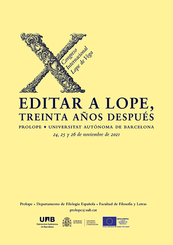
2021X Congreso Internacional
«Editar a Lope, treinta años después»
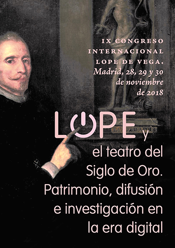
2018IX Congreso Internacional
«Lope y el teatro del Siglo de Oro. Patrimonio, difusión e investigación en la era digital»
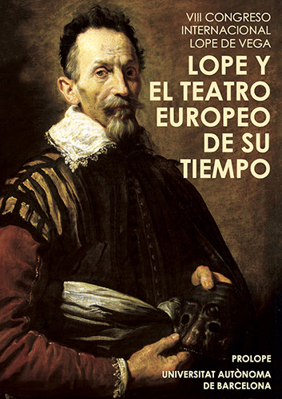
2015VIII Congreso Internacional
«Lope y el teatro europeo de su tiempo»
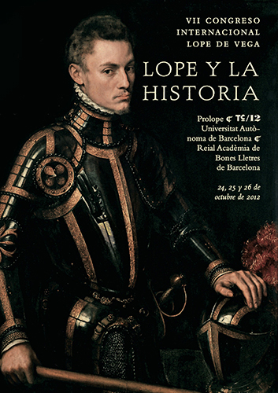
2012VII Congreso Internacional
«Lope y la Historia»
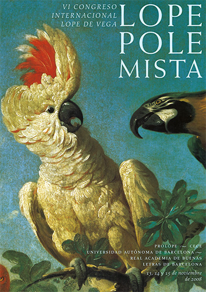
2008VI Congreso Internacional
«Lope Polemista»
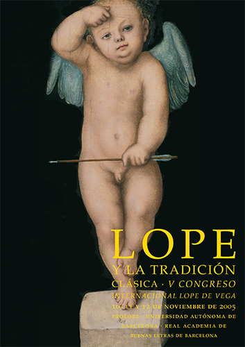
2005V Congreso Internacional
«Lope y la tradición clásica»
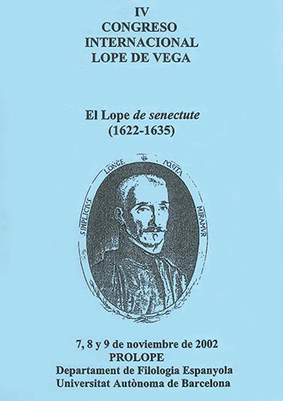
2002IV Congreso Internacional
«El Lope de senectute (1622–1635)»
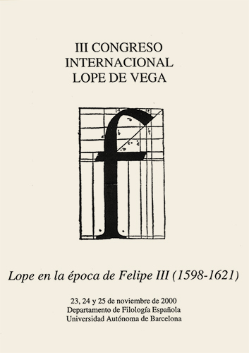
2000III Congreso Internacional
«Lope en la época de Felipe III (1598–1621)»
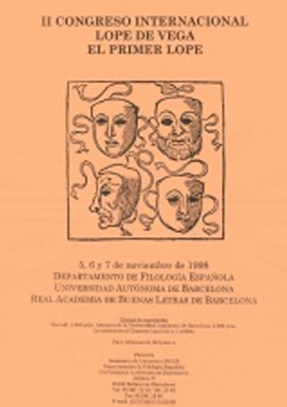
1998II Congreso Internacional
«El Primer Lope»
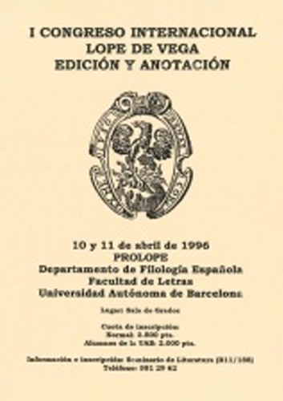
1996I Congreso Internacional
«Edición y anotación»
Otros congresos y coloquios
8 eventos
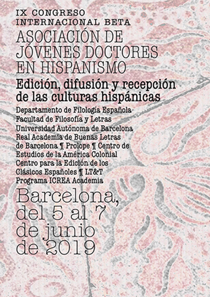
2019Congreso Internacional
IX Congreso BETA: «Edición, difusión y recepción de las culturas hispánicas»
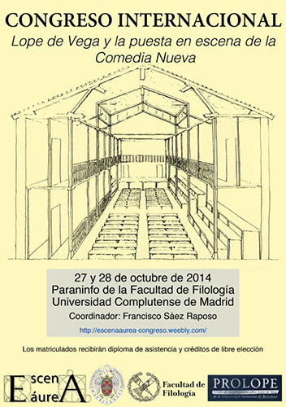
2014Congreso Internacional
«Lope de Vega y la puesta en escena de la Comedia Nueva»
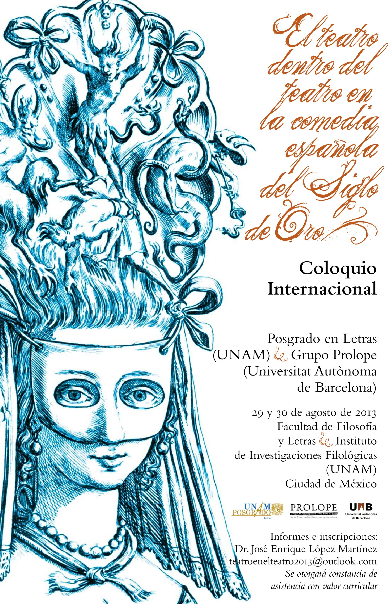
2013Coloquio Internacional
«El teatro dentro del teatro en la comedia española del Siglo de Oro»
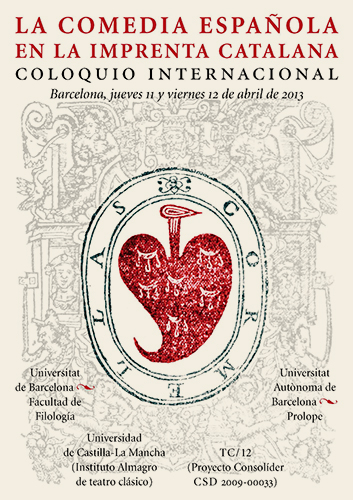
2013Coloquio Internacional
«La comedia española en la imprenta catalana»
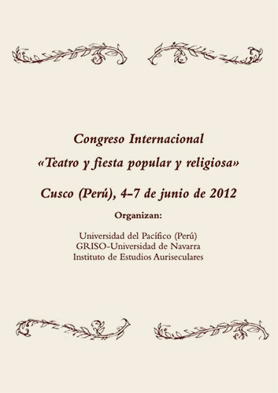
2012Congreso Internacional
«Teatro y fiesta popular y religiosa»
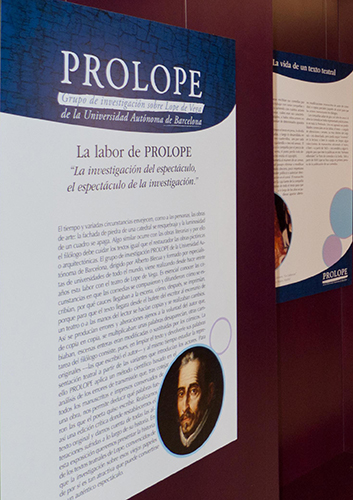
2011Evento especial
Textoescena: «La investigación del espectáculo, el espectáculo de la investigación»
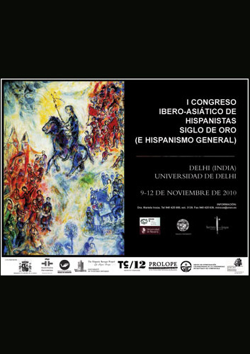
2010Congreso Internacional
I Congreso Ibero-Asiático de Hispanistas del Siglo de Oro
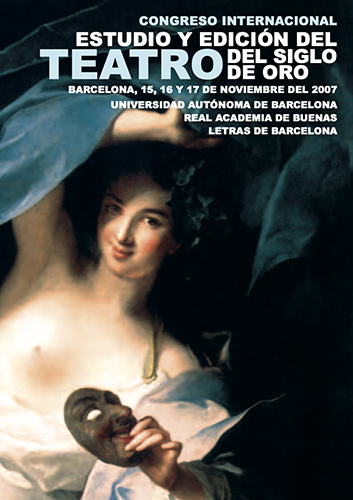
2007Congreso Internacional
«Estudio y Edición del Teatro del Siglo de Oro»